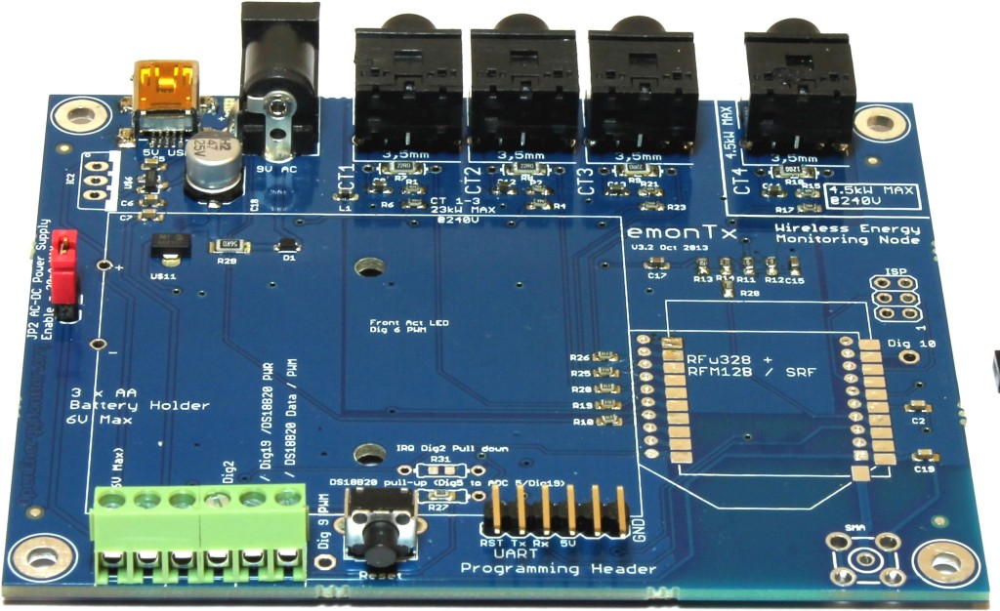

Hi,
Recently I treated myself with a set of emonTX, emonBase and emonGLCD to monitor the energy consumption of my house, a nice new hobby. To program the emonTX / emonGLCD I bought the "USB to serial UART" with the CP2101 chipset.
Unfortunately I'm having trouble the USB>UART. Initially I figured it had to do with drivers since I used it on my Mac (which I recently bought, so I'm a newbie on that as well). But later in the process I did an astonishing discovery, when I bend the board in certain (...) directions the device IS detected!
I've checked and rechecked all connections, resoldered some of them but can't find the culprit. Is anyone else experiencing the same problem? Or should I order a new cable....?
For now I've lend another cable from a friend which enables me to program the devices. Only downside of this cable is the that the connector is on the board making it to thick to fit in the slim slot of the emonTX3 :-)
Cheers,
Ingmar
PS: I'm using the USB prober software Apple provides to troubleshoot USB peripherals
Re: USB>UART - Broken connections?
Oh dear that sound like a faulty board. Please contact us through the shop support channel and we will organise replacement
Re: USB>UART - Broken connections?
One question related to this issue:
I have an alternative USB>UART device however I am using properly and I am programming nicely my EmonTXv3.
http://www.amazon.com/CP2102-UART-6PIN-Serial-Converter/dp/B00CD264HG/re...
My problem is:
Is correctly printed EmonTXv3 PCB? I think the connection order is wrong.
If I plug USB>UART device with your programmer order (GROUND/3.3V/5V/TXD/RXD/RTS) everything is good but in PCB you can read (GROUND/ N.D./ 5V/RX/TX/RTS) Two questions:
TX = TXD? and RX =RXD?
and
Why do TX and RX are changed? I don't understand it.
See u guys....
Re: USB>UART - Broken connections?
I send images to explain it better.

Re: USB>UART - Broken connections?
The printing is correct. You transmit the data onto one end of the wire and you receive the data at the other end of the wire. Data is transmitted from the TX (or TXD) pin and received on the RX (or RXD) pin. Therefore you connect TX - RX and RX - TX.
If you go back to the days of dial-up modems, the serial connection was always like that, and the control lines were the same, so RTS (Request to Send) connected to CTS (Clear to Send) etc.
PS> Why don't you buy from the shop? That way, you give a bit of money towards supporting this website.
Re: USB>UART - Broken connections?
OK !!
I am soooooo noob nowadays.
Thanks a lot for the info.
I didn't buy because I had one before for my ARDUINO UNO and I knew how to use it, but I didn't know that.
I have bought hundreds of pounds in your devices this year, I am a very good client, Ask Glyn if you don't believe me. :-)
Thanks guys.